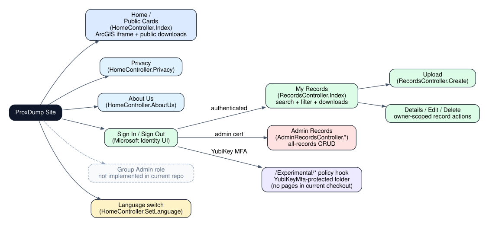
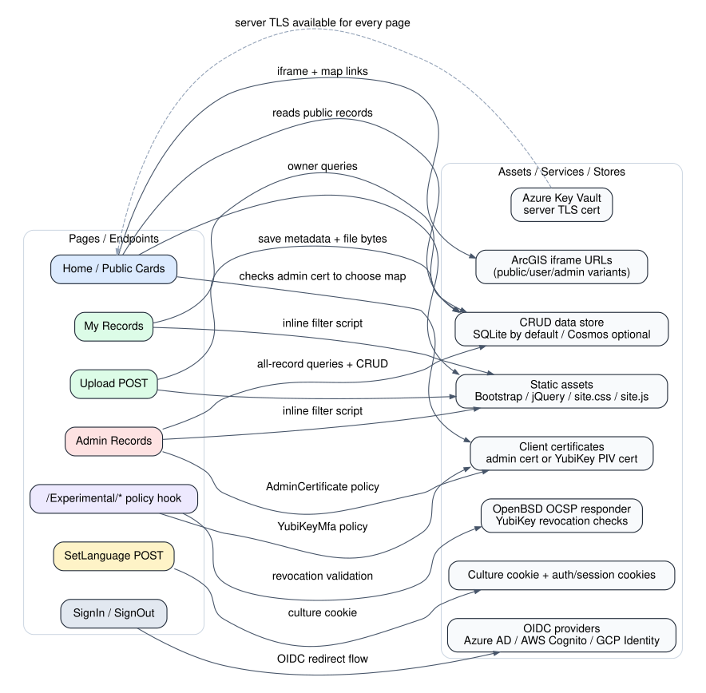
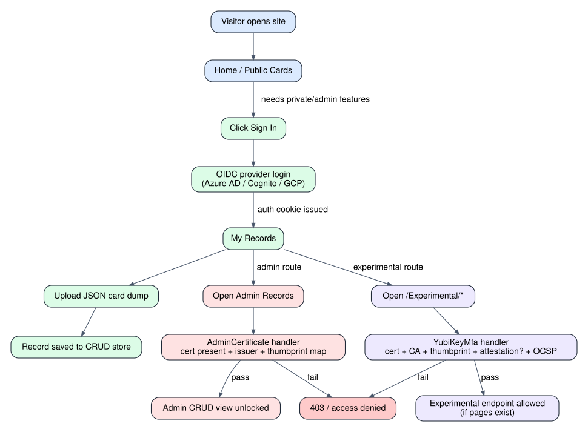
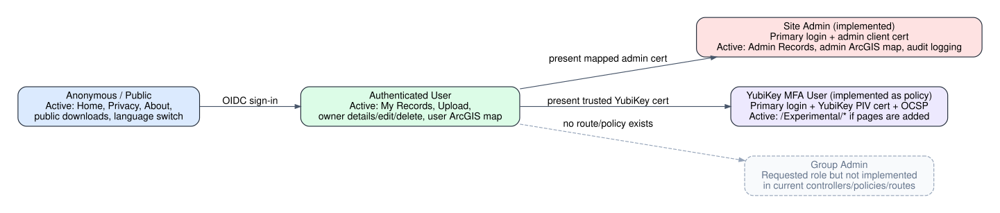
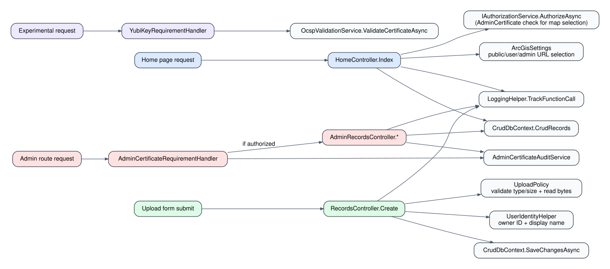
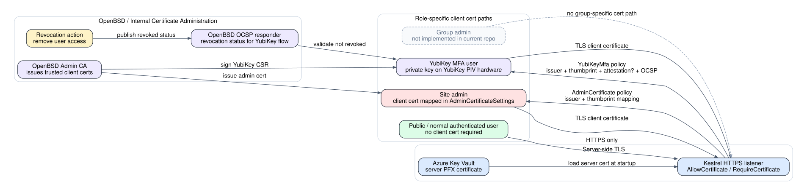
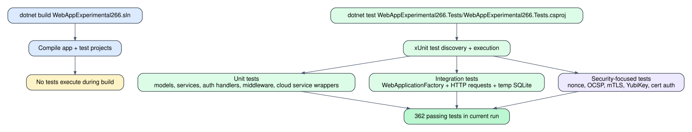

US-English documentation for the current WebAppExperimental266 site structure, page-to-asset relationships, role activation paths, certificate workflows, YubiKey login handling, and automated test behavior.
This guide documents the current structure of the site, the roles that are actually wired into the repository, the pages and assets those roles activate, the most common request flows, the certificate-authority processes behind privileged access, and how the automated tests interact with the application.
Current-scope note: The repository currently implements public, authenticated user, site admin (admin certificate), group admin (group-scoped certificate), and YubiKey MFA policy flows. The
/Experimental/*YubiKey policy hook exists even though no Razor Pages currently live under that folder.
/Experimental/*: a signed-in user must also present a trusted YubiKey PIV certificate and pass OCSP validation.dotnet test; they are not executed during plain compilation.| Role | Implemented now | Gate | Main active pages | Main assets/services activated |
|---|---|---|---|---|
| Public visitor | Yes | None | Home, Privacy, About, public downloads | ArcGIS public URL, CRUD read for public rows, static assets |
| Authenticated user | Yes | OIDC login (Azure AD, AWS Cognito, or GCP Identity) | My Records, Upload, owner Details/Edit/Delete | Auth cookie, CRUD owner queries, inline filters, user ArcGIS URL |
| Site admin | Yes | OIDC login + AdminCertificate policy |
Admin Records CRUD | Client certificate, audit logging, full CRUD, admin ArcGIS URL |
| YubiKey MFA user | Policy only | OIDC login + YubiKeyMfa policy |
/Experimental/* if pages are added |
YubiKey PIV certificate, OCSP, optional attestation checks |
| Group admin | Yes | OIDC login + GroupAdminCertificate policy |
Group Admin Records CRUD | Client certificate mapped to group/user identity, group-scoped CRUD, audit logging |

The site surface is centered on four implemented controller areas:
HomeController for public content and role-based map selection.RecordsController for owner-scoped CRUD actions after sign-in.AdminRecordsController for admin-scoped CRUD actions after both primary login and certificate validation.GroupAdminRecordsController for group-scoped CRUD actions after both primary login and group-admin certificate validation.The repo also wires a YubiKey policy to /Experimental/*, but there are no Razor Pages under Pages/Experimental in this checkout.
| Route or surface | Access | Core code path | What it does |
|---|---|---|---|
/ |
Public | HomeController.Index |
Lists public records and chooses a public/user/admin ArcGIS map URL |
/Privacy, /Home/Privacy |
Public | HomeController.Privacy |
Static privacy page |
/AboutUs, /Home/AboutUs |
Public | HomeController.AboutUs |
Static about page |
POST /Home/SetLanguage |
Public | HomeController.SetLanguage |
Persists culture choice in a cookie |
/Records |
Authenticated user | RecordsController.Index |
Lists the current user’s records |
/upload |
Authenticated user | RecordsController.Create |
Uploads a JSON card dump and metadata |
/Records/Details/{id} |
Owner/public read rules | RecordsController.Details |
Shows one record |
/Records/Edit/{id} |
Owner only | RecordsController.Edit |
Updates title/description |
/Records/Delete/{id} |
Owner only | RecordsController.Delete |
Removes a record |
/Records/Download/{id} |
Public or authorized | RecordsController.Download |
Downloads file content |
/AdminRecords/* |
Site admin | AdminRecordsController.* |
Full-record CRUD and admin search/filter |
/GroupAdminRecords/* |
Group admin | GroupAdminRecordsController.* |
Group-scoped CRUD limited to the mapped group |
/Account/SignIn, /Account/SignOut |
Public/authenticated | Microsoft Identity UI | Starts or ends the primary login session |
/Experimental/* |
YubiKey MFA policy | Razor Pages convention | Reserved for second-factor protected pages |

Key page-to-asset relationships:
| Page | Asset or external dependency | Purpose |
|---|---|---|
| Home | ArcGIS iframe URL | Chooses public, user, or admin map based on auth and admin-certificate result |
| Home | CRUD store | Reads up to 50 public records |
| Records pages | CRUD store | Reads or writes owner-scoped records |
| Records/Admin views | Inline JavaScript + static assets | Client-side table filtering and layout |
| Admin Records | Client certificate + audit service | Unlocks admin surface and records access attempts |
| Sign-in UI | OIDC provider | Establishes the primary identity |
/Experimental/* |
YubiKey certificate + OCSP responder | Enforces a second factor when the folder is used |
| Every HTTPS request | Azure Key Vault server certificate (optional feature) | Supplies the TLS server identity to Kestrel |

The most common user journeys are:
/AdminRecords → pass AdminCertificateRequirementHandler → unlock full CRUD./Experimental/* → pass YubiKey issuer, thumbprint, optional attestation, and OCSP checks.
This role model reflects what the current code actually activates:
/Experimental/*.
The main request paths activate these application components:
| Interaction | Main controller/function path | Supporting services/functions |
|---|---|---|
| Open home page | HomeController.Index |
LoggingHelper.TrackFunctionCall, CrudDbContext.CrudRecords, IAuthorizationService.AuthorizeAsync, ArcGisSettings |
| Upload record | RecordsController.Create |
UploadPolicy, UserIdentityHelper, CrudDbContext.SaveChangesAsync |
| Browse own records | RecordsController.Index |
UserIdentityHelper.GetStableUserId, CrudDbContext |
| Open admin pages | AdminCertificateRequirementHandler then AdminRecordsController.* |
AdminCertificateAuditService, CrudDbContext |
| Open group-admin pages | GroupAdminCertificateRequirementHandler then GroupAdminRecordsController.* |
GroupAccessSettings, AdminCertificateAuditService, CrudDbContext |
| Open YubiKey-protected route | YubiKeyRequirementHandler |
OcspValidationService, YubiKeySettings, TLS client certificate chain |
| Client-side filtering | Views/Records/Index.cshtml and Views/AdminRecords/Index.cshtml inline scripts |
Bootstrap, jQuery, nonce-bearing script tags when CSP is enabled |

The certificate architecture splits into two major trust paths:
| Role | Client certificate required | Validation path |
|---|---|---|
| Public | No | Server TLS only |
| Authenticated user | No | OIDC login only |
| Site admin | Yes | AdminCertificateSettings.AllowedIssuers + mapped thumbprint |
| YubiKey MFA user | Yes | Allowed CA issuer + optional CA thumbprint + optional attestation + OCSP |
| Group admin | Yes | GroupAccessSettings group/user mapping + mapped thumbprint + allowed issuer |

The current repository behavior is:
dotnet build WebAppExperimental266.sln compiles the application and test projects, but does not run tests.dotnet test WebAppExperimental266.Tests/WebAppExperimental266.Tests.csproj compiles as needed, discovers xUnit tests, and then runs them.WebApplicationFactory<Program> and a temporary SQLite database so they can send real HTTP requests through the app pipeline.| Test area | What it exercises |
|---|---|
| Models tests | Configuration objects, defaults, validation helpers |
| Service tests | Auth handlers, OCSP logic, nonce services, cloud wrapper services |
| Extension tests | mTLS registration and pipeline ordering |
| Controller authorization tests | Required authorization attributes and policy usage |
| Integration tests | Home/Privacy routes, service registration, security headers, app startup |
| Security-focused tests | mTLS, YubiKey, admin certificate, nonce, OCSP behavior |
The automated tests run during dotnet test, not during a plain dotnet build. In the current validation run for this task, the repository passed 367 tests.
/Experimental/* is already reserved for YubiKey MFA, so future feature work can attach new Razor Pages there without redesigning the auth model.| Security feature area | Current implementation in this repo | NIST control mappings |
|---|---|---|
| Security headers | CSP with nonce/hash support; X-Frame-Options, X-Content-Type-Options, HSTS, Referrer-Policy, Permissions-Policy, COOP/CORP, cache-control hardening | SC-5 (Denial-of-Service protections), SC-7 (Boundary protection), SC-8 (Transmission confidentiality/integrity), SC-23 (Session authenticity), SI-10 (Information input validation) |
| Certificate-based access control | AdminCertificate and GroupAdminCertificate policies enforce mapped client-certificate access for privileged routes; failed/successful attempts are audited |
IA-2 (Identification and authentication), IA-5 (Authenticator management), AC-3 (Access enforcement), AU-2/AU-12 (Auditable events and logging) |
| External resource use | Feature-flagged integrations for Azure Key Vault/Cosmos/Blob, AWS Secrets Manager/DynamoDB/Cognito, and GCP Secret Manager/Firestore/Identity with explicit startup wiring | CM-7 (Least functionality), SA-9 (External system services), SC-7 (Boundary protection), SR-3 (Supply chain controls) |
| MFA (YubiKey) | YubiKeyMfa policy enforces second factor via client cert checks, issuer/thumbprint constraints, optional attestation checks, and OCSP revocation validation |
IA-2(1)/(2) (Multi-factor authentication), IA-5 (Authenticator management), SC-17 (PKI certificates), SI-4 (System monitoring through revocation/status checks) |
WebAppExperimental266/Program.csWebAppExperimental266/Controllers/HomeController.csWebAppExperimental266/Controllers/RecordsController.csWebAppExperimental266/Controllers/AdminRecordsController.csWebAppExperimental266/Controllers/GroupAdminRecordsController.csWebAppExperimental266/Extensions/ServiceCollectionExtensions.csWebAppExperimental266/Extensions/CrudAndAdminExtensions.csWebAppExperimental266/Services/AdminCertificateRequirementHandler.csWebAppExperimental266/Services/GroupAdminCertificateRequirementHandler.csWebAppExperimental266/Services/YubiKeyRequirementHandler.csWebAppExperimental266/Services/CrudRecordAuthorizationHandler.csWebAppExperimental266/Views/Shared/_Layout.cshtmlWebAppExperimental266/Views/Home/Index.cshtmlWebAppExperimental266/Views/Records/Index.cshtmlWebAppExperimental266/Views/AdminRecords/Index.cshtmlWebAppExperimental266/Views/GroupAdminRecords/Index.cshtmlWebAppExperimental266.Tests/Integration/ApplicationIntegrationTests.csWebAppExperimental266.Tests/Integration/MtlsIntegrationTests.csdocs/YUBIKEY_OPENBSD_ADMIN_GUIDE.md